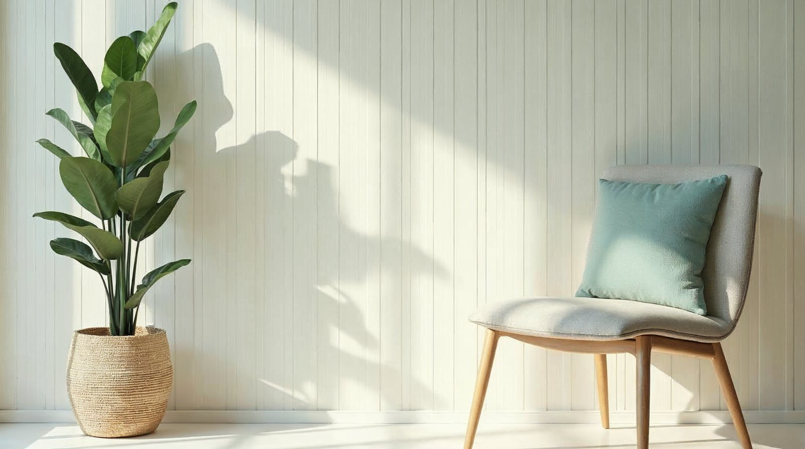
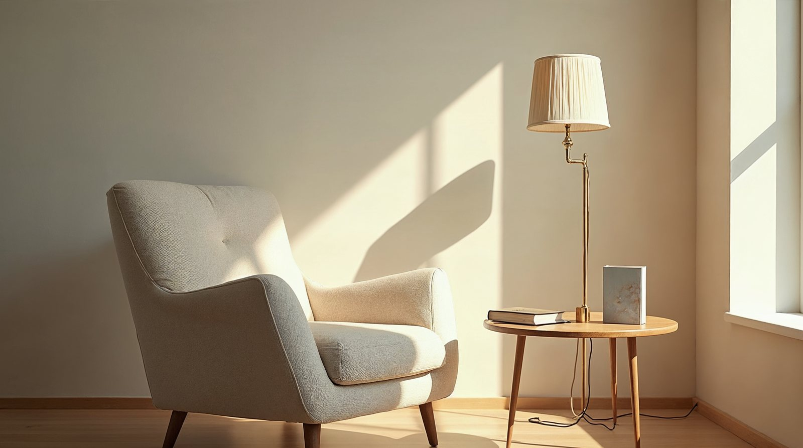
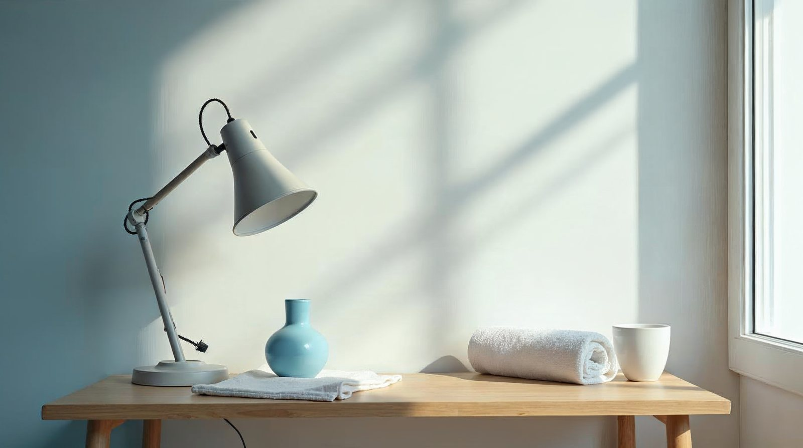
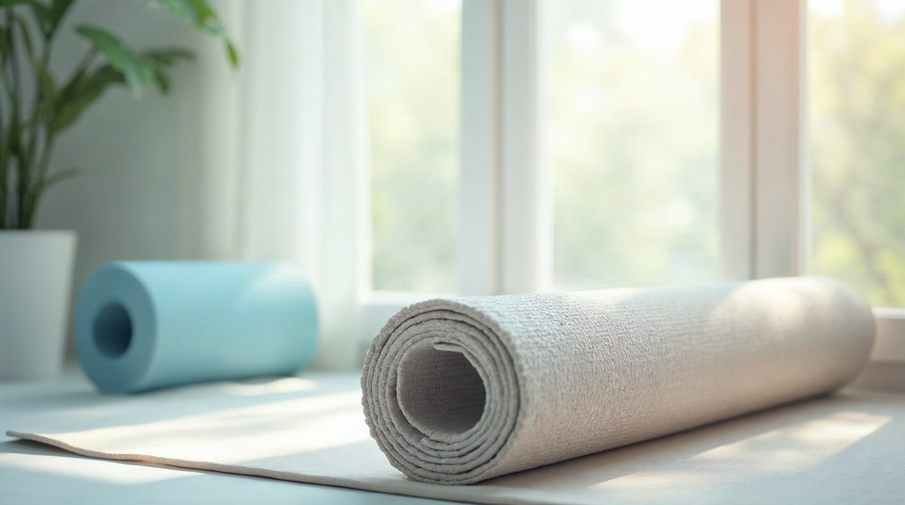
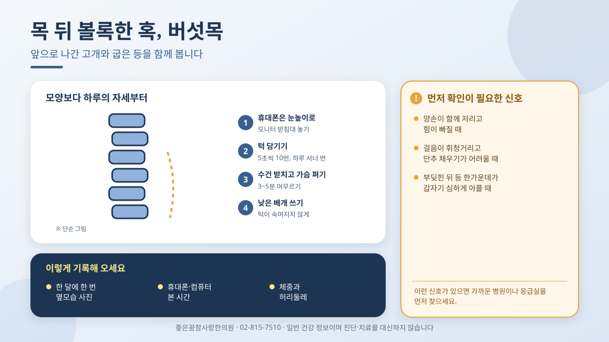

이종호 한의사 감수좋은꿈참사랑한의원 대표원장 (한의사 면허번호 19769)발행 2026-11-26 · 수정 2026-11-26
이 글의 차례
머리를 감고 나와 거울 앞에서 옆으로 섰는데, 목 아래 등 위쪽이 볼록하게 솟아 있는 것이 눈에 들어옵니다. 손으로 만져 보면 둥그렇고 말랑한 덩어리가 느껴집니다. 셔츠를 입으면 깃이 그 자리에 걸려 뜨고, 사진 속 옆모습은 어깨가 앞으로 말린 채 고개만 쑥 나와 있습니다.
진료실에서 이런 고민을 꺼내시는 분들은 대개 조금 머뭇거리십니다. 아픈 것도 아닌데 모양 때문에 와도 되나 싶으셨다고요. 하지만 목 뒤가 늘 뻐근하고, 어깨가 무겁고, 오후만 되면 머리가 띵하다는 이야기가 뒤이어 나오는 경우가 많습니다. 모양과 불편이 한 뿌리에서 나오는 경우가 적지 않습니다.
흔히 '버섯목'이라고 부르는 이 모습은 한 가지 원인으로만 생기지 않습니다. 고개를 앞으로 내민 자세, 굽어진 등뼈, 그 자리에 쌓인 지방과 두꺼워진 조직이 함께 어우러져 만들어지는 경우가 대부분입니다. 그래서 어느 쪽이 더 큰 몫을 하는지부터 나눠 보는 것이 시작입니다.
이 글에서는 목 뒤 볼록한 혹이 무엇이고 왜 생기는지, 거북목이나 다른 혹과 어떻게 다른지, 생활에서 해 볼 수 있는 것과 한의원에서 함께 살필 수 있는 것을 차례로 정리했습니다. 모양이 하루아침에 바뀌지는 않지만, 방향을 바꾸는 일은 오늘부터 시작할 수 있습니다.
목 뒤 볼록한 혹은 무엇인가요
목뼈 가장 아래와 등뼈 가장 위가 만나는 자리는 목을 숙이면 툭 튀어나오는 뼈가 만져지는 곳입니다. 이 자리 주변이 둥그렇게 솟아 보이는 것을 흔히 버섯목, 또는 등 위쪽 혹이라고 부릅니다. 의학적으로 따로 정해진 병명이라기보다, 눈에 보이는 모습을 일컫는 말에 가깝습니다.
만져서 말랑하고 넓게 퍼진 느낌이라면 피부 아래 지방 조직이 두꺼워진 경우가 많고, 딱딱하게 뼈가 도드라진 느낌이라면 등뼈가 앞으로 많이 굽어 있는 경우가 많습니다. 실제로는 두 가지가 섞여 있는 경우가 흔합니다.
이 자리는 고개를 앞으로 내밀 때 가장 많은 부담을 받는 곳입니다. 머리 무게를 버티느라 근육과 인대가 늘 긴장해 있고, 몸은 그 부담에 맞서 조직을 두껍게 만들어 버티려 합니다. 그 결과가 겉으로 볼록하게 드러나는 것이라고 이해하시면 됩니다.
왜 목 뒤에 혹처럼 솟을까요
대부분은 오랜 시간 쌓인 자세 습관이 출발점입니다. 고개가 어깨보다 앞으로 나가 있으면, 머리 무게를 받치기 위해 목 아래와 등 위쪽이 계속 당겨지고 눌립니다. 그 상태가 몇 년씩 이어지면 등뼈도 그 모양에 맞춰 굽어 갑니다.
- 휴대폰과 노트북을 고개 숙여 오래 보는 생활
- 낮은 책상이나 소파에서 등을 말고 오래 앉아 있는 습관
- 가슴 앞쪽 근육은 짧아지고 등 근육은 약해진 상태
- 연세가 들며 등뼈가 앞으로 조금씩 굽어 가는 변화
- 체중이 늘며 목 뒤와 등 위쪽에 지방이 쌓이는 경우
- 오래 드신 약이나 호르몬 변화로 지방 분포가 달라진 경우
마지막 경우처럼 자세와 상관없이 목 뒤에 지방이 빠르게 쌓이고, 얼굴이 둥글어지거나 배와 몸통 위주로 살이 붙는다면 몸속 호르몬 변화를 확인해 보는 것이 좋습니다. 이럴 때는 내과에서 검사를 함께 받아 보시도록 안내합니다.
거북목과는 어떻게 다른가요
거북목은 고개가 어깨보다 앞으로 나가 있는 자세를 말합니다. 버섯목은 그 자세가 오래 이어진 끝에 목 아래, 등 위쪽에 생긴 볼록한 모습을 가리키는 경우가 많습니다. 거북목이 원인이라면 버섯목은 그 흔적에 가깝다고 볼 수 있습니다.
그래서 거북목만 있을 때는 자세를 바로잡으면 비교적 빨리 모양이 달라지는 경우가 많지만, 등뼈의 굽음이나 지방 조직이 함께 자리 잡은 버섯목은 변화에 시간이 더 걸립니다. 그만큼 꾸준함이 중요합니다.
등뼈가 앞으로 굽어 있는 모습은 젊은 분에게는 자세성인 경우가 많고, 성장기에 등뼈 모양 자체가 쐐기처럼 변해 굽는 경우도 있습니다. 연세가 드신 분은 골다공증으로 등뼈가 납작하게 내려앉아 굽음이 커지기도 해서, 이런 가능성이 있다면 정형외과 검사를 함께 권합니다.

다른 혹과 구분해 볼 점
목 뒤 볼록한 자리가 한쪽으로 치우쳐 있거나, 경계가 또렷한 동그란 덩어리로 만져진다면 지방종이나 피지낭종 같은 다른 혹일 수 있습니다. 이런 혹은 자세를 바꿔도 모양이 그대로이고, 손가락으로 밀면 피부 아래에서 움직이는 느낌이 드는 경우가 많습니다.
혹이 붉어지고 따뜻해지며 눌러서 아프다면 염증이 생긴 경우일 수 있어 피부과나 외과 진료가 먼저입니다. 크기가 짧은 기간에 눈에 띄게 커지거나 단단하게 붙어 움직이지 않는다면 그 부분도 병원에서 확인해 보시는 것이 좋습니다.
자세에서 비롯된 버섯목은 대개 가운데에 넓게 퍼져 있고, 고개를 뒤로 당기고 가슴을 펴면 조금 덜 도드라져 보입니다. 이 차이를 알고 계시면 진료실에서 이야기를 나눌 때 도움이 됩니다.
스스로 살펴볼 수 있는 몇 가지
벽에 등을 대고 서서 아래를 확인해 보세요. 지금 내 목과 등이 어느 정도 앞으로 나가 있는지 감을 잡는 데 도움이 됩니다.
- 발뒤꿈치, 엉덩이, 등을 벽에 댄 상태에서 뒤통수가 벽에 닿나요?
- 뒤통수를 벽에 대려면 턱이 들리고 목이 젖혀지나요?
- 양팔을 벽에 댄 채 위로 올릴 때 팔이 벽에서 떨어지나요?
- 옆모습 사진에서 귀가 어깨보다 얼마나 앞에 있나요?
뒤통수가 벽에 닿지 않거나 닿게 하려면 턱이 크게 들린다면, 등 위쪽이 굽고 고개가 앞으로 나가 있는 상태일 가능성이 큽니다. 한 달에 한 번 같은 자리에서 옆모습 사진을 찍어 두시면 변화를 비교하기 좋습니다.

나이와 생활에 따라 달라지는 모습
학생과 젊은 직장인은 책상 앞에서 보내는 시간이 길고 휴대폰을 보는 시간도 많아, 고개가 앞으로 나간 자세가 습관으로 굳어 가는 시기입니다. 이 시기에는 등뼈보다 근육과 자세 쪽의 몫이 큰 경우가 많아서, 생활을 바꾸면 비교적 빨리 달라지는 것을 느끼시기도 합니다.
중년 이후에는 근육량이 줄고 등뼈와 디스크의 변화가 함께 오면서 굽음이 조금씩 자리를 잡습니다. 여기에 체중 변화까지 겹치면 볼록한 모습이 더 도드라집니다. 이때는 자세와 함께 등 근육의 힘을 기르는 운동, 체중 흐름을 함께 보는 것이 좋습니다.
폐경 전후의 여성분은 뼈가 약해지는 시기와 겹쳐 등뼈가 굽기 쉽습니다. 키가 예전보다 줄었다는 말을 들으셨다면 뼈 건강 검사를 받아 보시고, 그 결과에 맞춰 운동 강도를 정하는 것이 안전합니다.
먼저 이렇게 여쭙니다
처음 오시면 저는 대략 이런 순서로 여쭙니다. 미리 떠올려 오시면 이야기가 훨씬 수월해집니다.
- 볼록한 자리를 언제 처음 알아차리셨고, 그사이 크기가 달라졌나요?
- 목 뒤 뻐근함, 어깨 결림, 두통이 함께 있나요?
- 하루 중 휴대폰과 컴퓨터를 보는 시간은 어느 정도인가요?
- 최근 체중이 늘었거나, 얼굴과 몸통 쪽으로 살이 붙은 느낌이 있나요?
- 오래 드신 약, 특히 스테로이드 성분의 약을 드신 적이 있나요?
- 골다공증 검사를 받으셨거나 키가 줄었다는 말을 들으신 적이 있나요?
잠자는 자세와 베개 높이도 함께 여쭙니다. 높은 베개를 오래 쓰시면 밤새 고개가 앞으로 숙여진 채로 지내게 되어 낮의 자세 습관이 밤까지 이어집니다. 쓰시는 베개를 사진으로 찍어 오시면 높이를 함께 맞춰 보기 좋습니다.
일상에서 먼저 해 볼 수 있는 것
버섯목은 오랜 시간에 걸쳐 만들어진 모습이라, 짧은 기간에 크게 바꾸려 하기보다 매일 조금씩 방향을 바꾸는 것이 중요합니다. 고개를 뒤로 되돌리고, 굽은 등을 펴고, 등 근육을 깨우는 세 가지에 집중해 보세요.
- 휴대폰은 눈높이 가까이 들어 올려 보기
- 모니터 윗부분이 눈높이에 오도록 받침대 놓기
- 턱을 살짝 당겨 뒤통수를 뒤로 미는 턱 당기기, 하루 여러 번
- 둥글게 만 수건을 등 위쪽에 받치고 누워 가슴 펴기
- 문틀에 양팔을 대고 가슴 앞쪽을 천천히 늘리기
- 엎드려 양팔을 Y자로 들어 날개뼈를 모으는 운동
턱 당기기는 고개를 숙이는 것이 아니라, 턱을 수평으로 뒤로 밀어 뒤통수가 뒤로 가게 하는 동작입니다. 이중 턱이 생기는 느낌이 들면 제대로 하고 계신 겁니다. 5초 버티고 풀기를 10번, 하루 서너 번 해 보세요.
수건을 받치고 누울 때는 수건을 날개뼈 높이 정도에 가로로 두고, 양팔을 옆으로 벌려 가슴이 열리도록 3~5분 머물러 보세요. 허리가 과하게 뜨지 않도록 무릎은 세우는 편이 좋습니다. 처음에는 등이 뻐근할 수 있으니 짧게 시작하세요.
베개는 바로 누웠을 때 턱이 가슴 쪽으로 숙여지지 않을 정도로 낮추시는 것이 좋습니다. 체중이 늘어 지방이 함께 쌓인 경우라면 저녁 식사량을 조금 줄이고 걷는 시간을 늘리는 것도 함께 해 보세요.
걸을 때도 자세를 한 번씩 떠올려 보세요. 시선을 발끝이 아니라 10~15미터 앞에 두고, 정수리가 위로 끌려 올라가는 느낌으로 걸으면 고개가 자연스럽게 뒤로 돌아옵니다. 하루 한 번의 산책이 자세 연습 시간이 될 수 있습니다.

한의원에서 함께 살필 수 있는 경우
- 목 뒤가 볼록하게 솟아 있고 그 자리가 늘 뻐근하고 무거운 경우
- 등이 굽어 보이고 어깨가 앞으로 말려 있는 경우
- 목과 어깨 결림에 오후마다 머리가 무겁고 띵한 경우
- 오래 앉아 일하거나 공부하며 자세가 점점 굽어 가는 경우
- 자세를 바로잡고 싶은데 어디서부터 해야 할지 막막한 경우
좋은꿈참사랑한의원에 오시면 먼저 아래 '먼저 확인이 필요한' 신호가 없는지부터 봅니다. 그다음 맥을 짚고, 목과 등의 굽음, 가슴과 어깨 앞쪽의 당김, 등 근육의 힘을 함께 살핍니다. 볼록한 자리를 직접 만져 보며 단단한 정도와 범위도 확인합니다.
진찰한 내용을 바탕으로 추나, 침, 약침, 온열 관리 가운데 지금 상태에 맞는 것을 정합니다. 골다공증이 있거나 의심되는 분은 추나의 방법과 강도를 더 신중히 정합니다. 체중과 몸의 붓기, 피로가 함께 있다면 한약 상담을 하기도 하며, 이때는 드시는 약을 모두 확인하고 신중히 정합니다.
임신 중이시거나 가능성이 있다면 먼저 알려 주시고, 산부인과와 상의하도록 안내합니다.
호르몬 변화나 다른 혹이 의심되면 내과나 외과 진료를 함께 권해 드립니다. 다른 병원에서 받는 치료와 처방받은 약은 상의 없이 멈추지 않습니다.
이렇게 기록해 오시면 상담이 쉬워집니다
모양의 변화는 매일 보면 알아차리기 어렵습니다. 아래 내용을 간단히 기록해 두시면 변화의 흐름을 함께 볼 수 있습니다.
- 한 달에 한 번, 같은 자리에서 같은 거리로 찍은 옆모습 사진
- 하루 중 휴대폰과 컴퓨터를 본 시간
- 턱 당기기, 가슴 펴기 같은 운동을 한 날 표시
- 목과 어깨 뻐근함, 두통이 있었던 날과 정도
- 체중과 허리둘레, 한 달에 한 번
사진은 아침에 일어나 같은 옷차림으로 찍으시면 비교가 쉽습니다. 몇 달 치 사진을 나란히 놓고 보면 거울로는 느끼기 어려운 변화가 보이고, 그것이 다음 걸음을 이어 가는 힘이 됩니다.

모양보다 하루의 자세를 먼저 봅니다
목 뒤 볼록한 혹은 오랜 시간 고개를 앞으로 내밀고 지내 온 몸의 기록입니다. 그 기록을 하루아침에 지울 수는 없지만, 오늘부터 쓰는 하루는 바꿀 수 있습니다. 모양에 마음을 쓰기보다 하루의 자세를 바꾸는 데 집중해 보세요. 자세가 달라지면 목과 어깨의 무게도 함께 가벼워지는 것을 느끼시는 분이 많습니다.
이번 주에는 휴대폰을 볼 때 눈높이로 들어 올리고, 하루 세 번 턱 당기기를 해 보는 것부터 시작해 보세요. 다음에 오시면 옆모습 사진을 함께 보며 어디서부터 바꿔 갈지 이야기 나눠 보겠습니다.
이런 증상은 먼저 확인이 필요합니다
- 양손이 함께 저리고 힘이 빠지거나 걸음이 휘청거리고 단추 채우기가 어려워진 경우
- 넘어지거나 가볍게 부딪힌 뒤 등 한가운데가 갑자기 심하게 아프고 키가 줄어든 경우
이런 신호가 있으면 한의원보다 가까운 병원이나 응급실을 먼저 찾으세요.
함께 읽으면 좋은 글
- 20대인데도 책상 앞에서 목과 어깨가 벌써 뻐근할 때는 어떻게 살피나요?
- 거북목과 일자목은 추나로 어떻게 살피나요?
- 거북목과 라운드숄더는 집에서 어떤 스트레칭을 해 볼 수 있나요?
- 노트북으로 과제와 시험공부를 오래 하는 대학생의 목과 등이 굽어 보일 때는 어떻게 살피나요?
- 골다공증으로 허리뼈 압박골절이 생긴 뒤 회복기에는 무엇을 살피나요?

여쭙는 것
- 볼록한 자리를 언제 처음 알아차리셨고, 그사이 크기가 달라졌나요?
- 목 뒤 뻐근함, 어깨 결림, 두통이 함께 있나요?
- 하루 중 휴대폰과 컴퓨터를 보는 시간은 어느 정도인가요?
생활에서 해 볼 것
- 휴대폰은 눈높이 가까이 들어 올려 보기
- 모니터 윗부분이 눈높이에 오도록 받침대 놓기
- 턱을 살짝 당겨 뒤통수를 뒤로 미는 턱 당기기, 하루 여러 번
한의원에서 함께 살필 것
- 목 뒤가 볼록하게 솟아 있고 그 자리가 늘 뻐근하고 무거운 경우
- 등이 굽어 보이고 어깨가 앞으로 말려 있는 경우
- 목과 어깨 결림에 오후마다 머리가 무겁고 띵한 경우
먼저 확인이 필요한 신호
- 양손이 함께 저리고 힘이 빠지거나 걸음이 휘청거리고 단추 채우기가 어려워진 경우
- 넘어지거나 가볍게 부딪힌 뒤 등 한가운데가 갑자기 심하게 아프고 키가 줄어든 경우
한눈에 보는 표
| 구분 | 핵심 |
|---|---|
| 여쭙는 것 | 볼록한 자리를 언제 처음 알아차리셨고, 그사이 크기가 달라졌나요? 목 뒤 뻐근함, 어깨 결림, 두통이 함께 있나요? |
| 생활에서 해 볼 것 | 휴대폰은 눈높이 가까이 들어 올려 보기 모니터 윗부분이 눈높이에 오도록 받침대 놓기 |
| 한의원에서 함께 살필 것 | 목 뒤가 볼록하게 솟아 있고 그 자리가 늘 뻐근하고 무거운 경우 등이 굽어 보이고 어깨가 앞으로 말려 있는 경우 |
| 먼저 확인이 필요한 신호 | 양손이 함께 저리고 힘이 빠지거나 걸음이 휘청거리고 단추 채우기가 어려워진 경우 넘어지거나 가볍게 부딪힌 뒤 등 한가운데가 갑자기 심하게 아프고 키가 줄어든 경우 |
자주 묻는 질문
버섯목은 운동으로 없어지나요?
자세에서 비롯된 부분은 꾸준한 운동과 생활 습관으로 덜 도드라지는 경우가 많지만, 등뼈의 굽음이나 지방이 오래 자리 잡았다면 변화에 시간이 걸립니다. 사진으로 기록하며 흐름을 함께 보시길 권합니다.
목 뒤 혹을 세게 문지르면 줄어드나요?
세게 문지르거나 두드리면 오히려 피부와 조직이 자극을 받을 수 있습니다. 문지르기보다 고개와 등의 자세를 바꾸고 주변 근육을 깨우는 쪽에 힘을 쓰시는 것이 좋습니다.
추나를 받으면 등이 펴지나요?
진찰로 굽음의 정도와 원인을 확인한 뒤 추나를 포함해 지금 상태에 맞는 방법을 정합니다. 결과는 사람마다 다르고, 집에서 하는 운동과 자세 습관이 함께 가야 합니다.
살이 찌면서 목 뒤가 더 볼록해졌어요.
체중이 늘면 그 자리에 지방이 함께 쌓이기도 합니다. 식사와 걷기로 체중 흐름을 함께 보고, 지방이 빠르게 늘거나 얼굴과 몸통 쪽으로 살이 붙었다면 내과 검사도 권해 드립니다.
베개는 어떤 것이 좋나요?
바로 누웠을 때 턱이 가슴 쪽으로 숙여지지 않고 목 아래 빈 곳을 살짝 채워 주는 높이가 좋습니다. 너무 높은 베개는 낮의 굽은 자세를 밤까지 이어지게 할 수 있습니다.
좋은꿈참사랑한의원은 재진 때 지난번 이야기부터 이어서 여쭙니다. 진료시간과 예약은 오시는 길에서 확인하세요.
어디서 상담받을 수 있나요?
좋은꿈참사랑한의원은 서울 동작구 만양로2길 2 신성빌딩 3층·5층(서울 동작구 상도동, 7호선 상도역 3번 출구 근처)에 있습니다. 한의사 3명(이종호 대표원장, 조영기 수석진료원장, 정원영 진료원장)이 진료합니다. 진료시간은 평일 09:30~20:00(점심 13:00~14:00), 토·일·공휴일 09:30~15:00이며, 방문 전 전화로 확인을 권합니다. 예약은 네이버 예약, 카카오톡 상담, 전화 02-815-7510로 받습니다.
이 글은 일반적인 건강 정보이며 개인의 진단이나 치료를 대신하지 않습니다. 증상이 있거나 복용 중인 약이 있다면 진료를 통해 확인하세요. 치료 효과는 개인마다 다를 수 있습니다.
작성 기준: 일반적으로 알려져 있는 건강 정보를 참고해 정리했습니다(대표원장 감수). 증상 기록은 1~2주 동안 하루 1회, 비슷한 시간에 적어 오시면 지난 상태와 비교하기 쉽습니다.